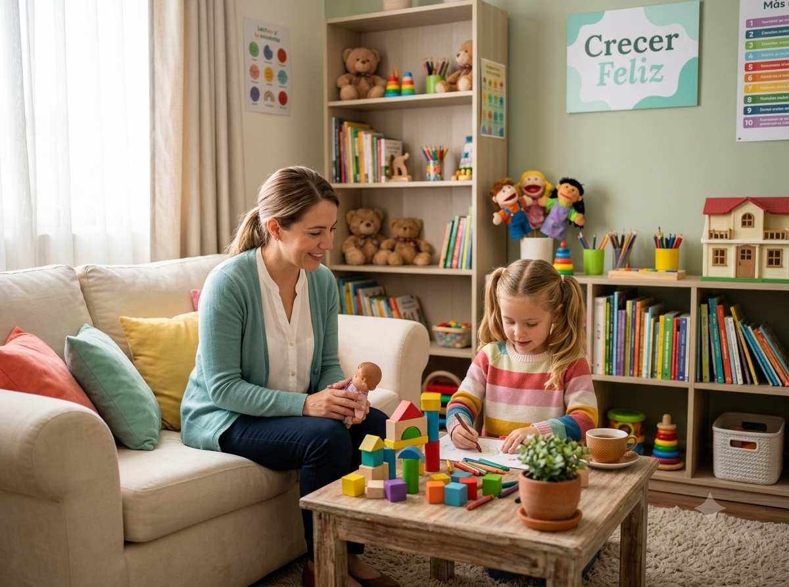
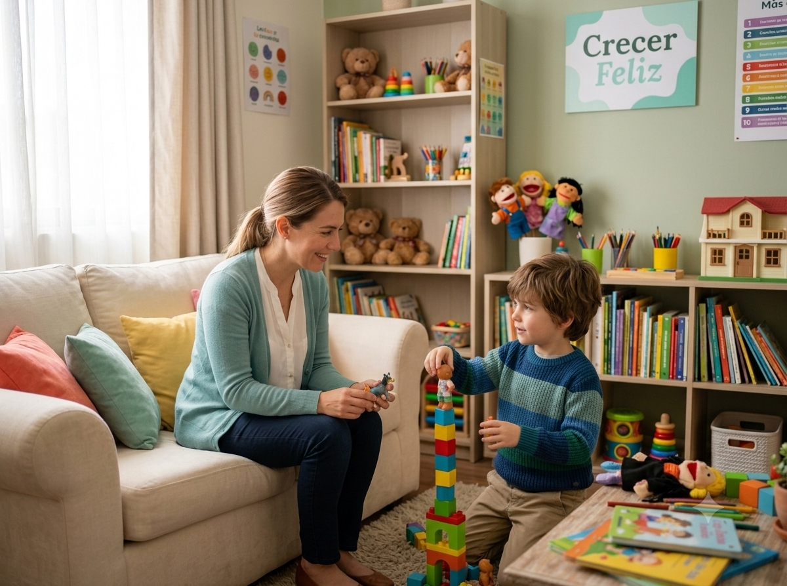
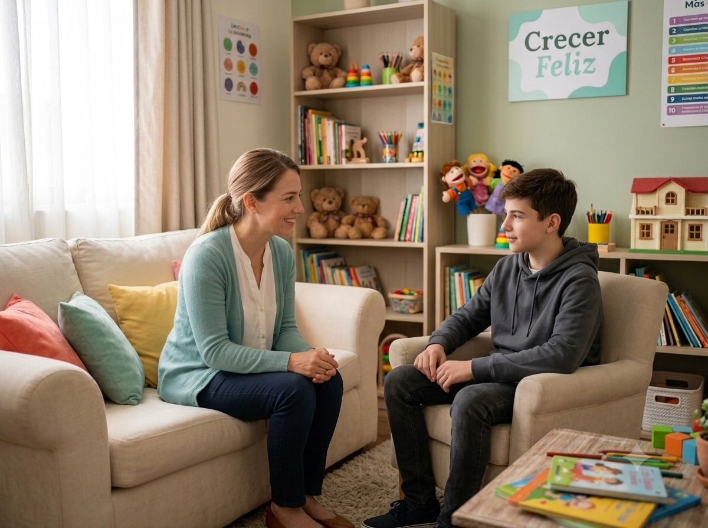

Acompañamiento emocional y desarrollo de habilidades cognitivas con métodos especializados, calidez y empatía.



Cómo puedo ayudarte
Cada caso es único, por lo tanto, los servicios se adaptan a las necesidades de cada paciente y su familia.
QUIÉN SOY
Psicóloga Infanto-juvenil & Adolescentes | Cédula 15053505
Soy psicóloga enfocada en la evaluación e intervención emocional, conductual y cognitiva de niñas, niños, adolescentes y jóvenes. Mi formación se orienta a la Terapia Cognitivo-Conductual y la Neuropsicología, lo que me permite brindar técnicas y herramientas basadas en una metodología científica y clara.
Creo firmemente que el proceso terapéutico de cada persona debe integrar estrategias funcionales y prácticas, pero, al mismo tiempo, una intervención cálida y humana en un espacio seguro y sin prejuicios.
Proceso inicial
Un proceso claro, acompañado y a tu ritmo.
"Cuando recién mi hija empezó su terapia era muy introvertida y le costaba expresar sus emociones. Ocasionalmente tenía episodios de pánico y ansiedad. Ahora la veo más segura de sí misma, expresa más lo que piensa y sabe poner límites. La salud mental es algo muy importante que debemos atender, así como cualquier otra enfermedad."
"La Lic. Jaques es una excelente psicóloga, súper amable y atenta. Te explica todo perfectamente bien. Trata a mi hijo, quien tiene una discapacidad intelectual, y te brinda toda la seguridad desde la primera consulta. La recomiendo al 100%."
"Ha sido un proceso profundamente significativo para nuestra familia. Hemos observado cambios muy valiosos en nuestra hija, especialmente en la manera en que identifica y expresa sus emociones, así como una mayor seguridad y tranquilidad. Nos da mucha alegría verla avanzar y sentirse más acompañada en lo que vive. Agradecemos sinceramente su profesionalismo, sensibilidad y compromiso durante este proceso."
"Desde mi experiencia en estas pocas sesiones que he tenido, la verdad es que al principio sentía muchos nervios porque era algo nuevo para mí. Sin embargo, el hecho de tener a una persona como compañera en este proceso y sentirme tanto escuchada como segura es una de las tantas cosas que agradezco haber hecho, y más contigo. Me has ayudado mucho en estas sesiones, y sé que me seguirás guiando como hasta ahora. Sé que seré mucho mejor de lo que soy hoy. Totalmente agradecida de que seas tú mi psicóloga.🥹🫶🏻"
"Al inicio no estaba muy convencida de la terapia, pero con el tiempo fui notando pequeños cambios que hoy hacen una gran diferencia. La Lic. Karen transmite mucha confianza y, sobre todo, nos ha brindado un espacio de aprendizaje con gran profesionalismo. ¡La recomiendo mucho!"
CONTACTO